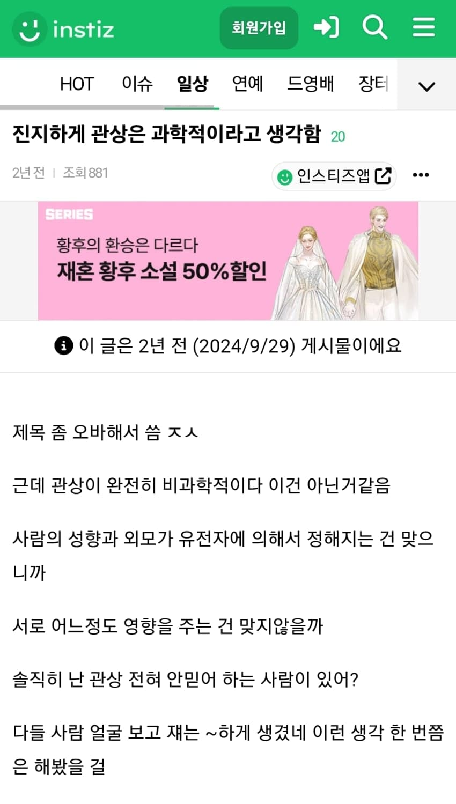
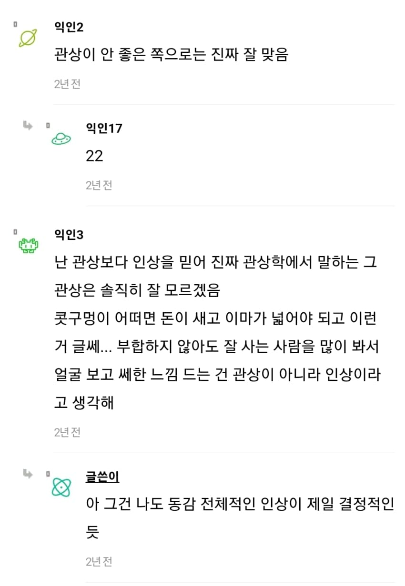
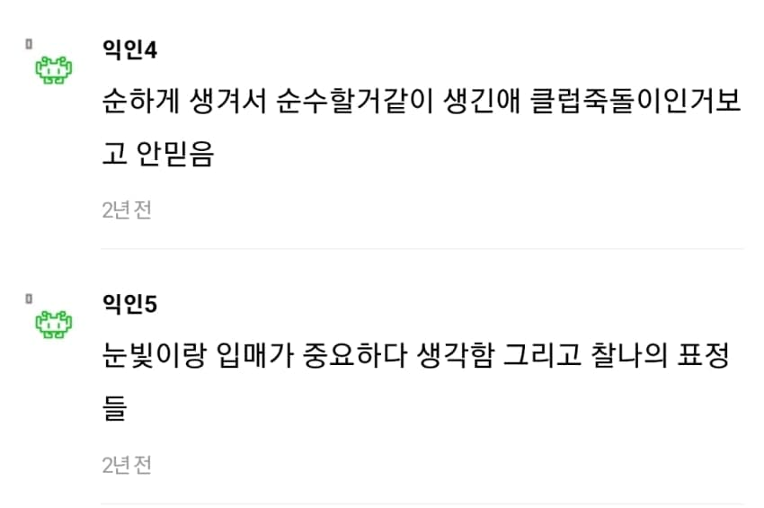
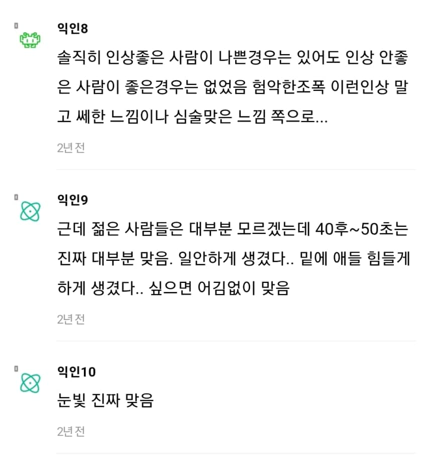
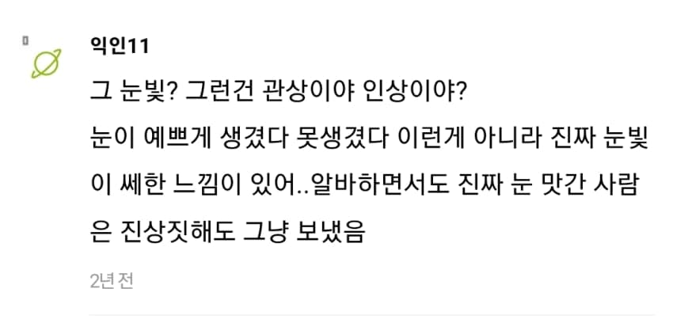
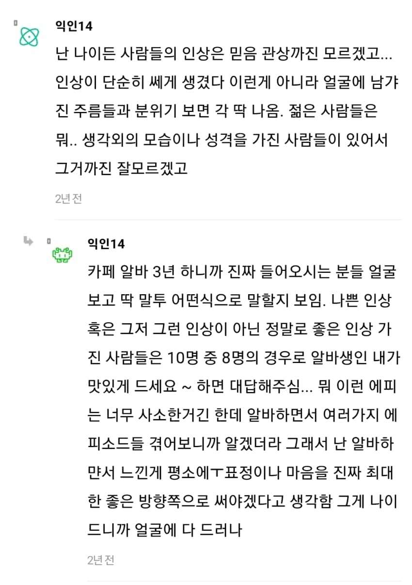
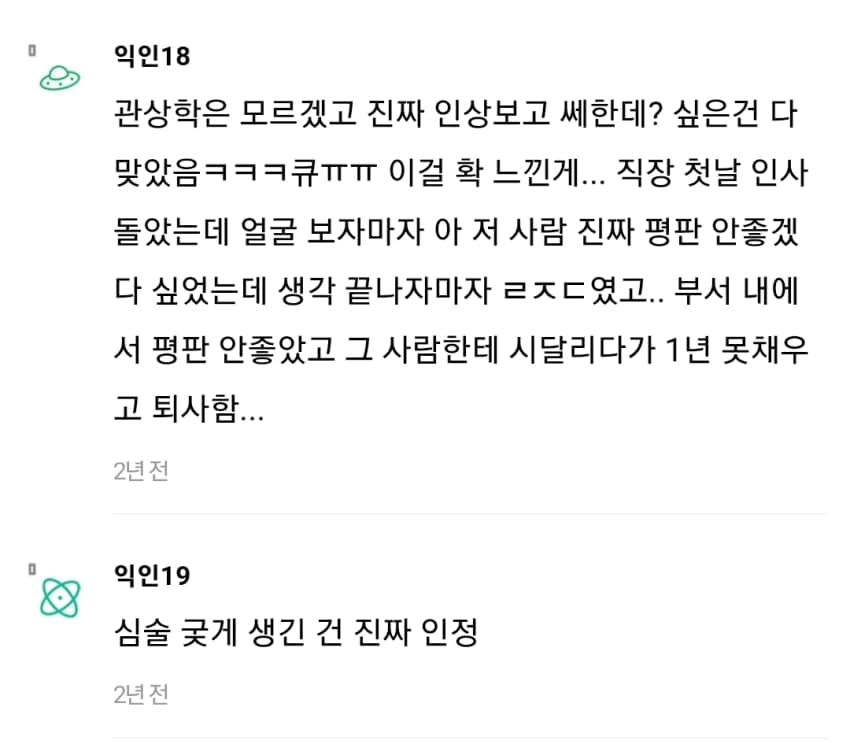
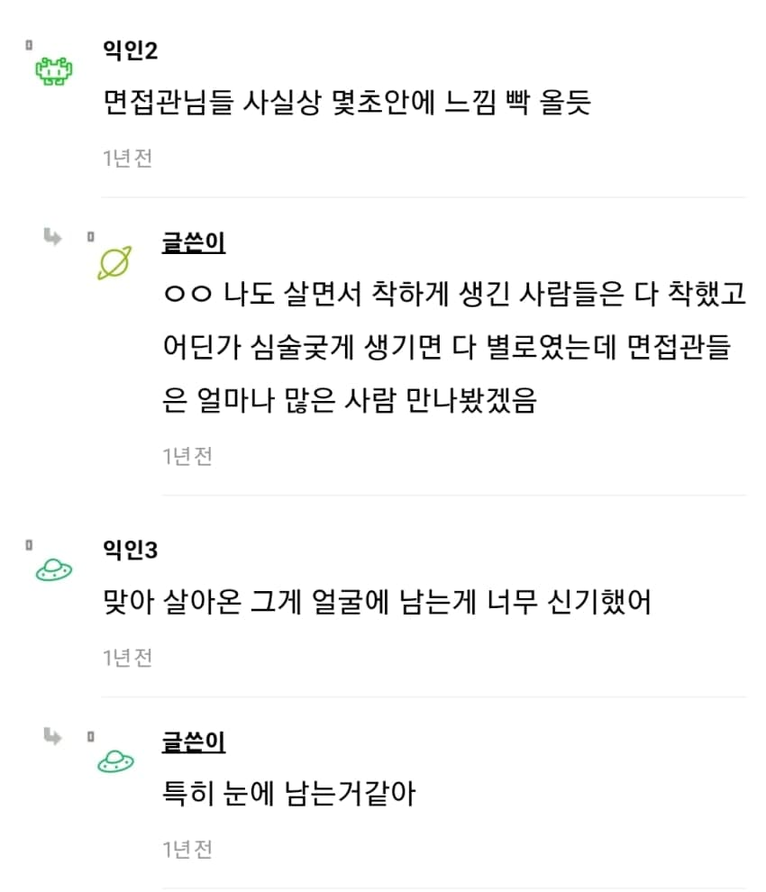
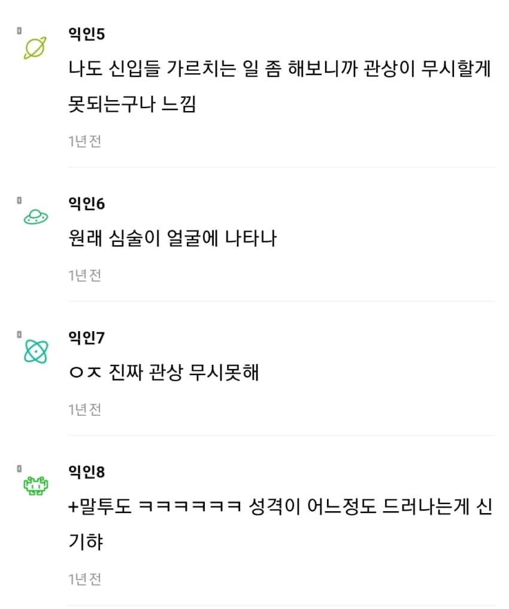
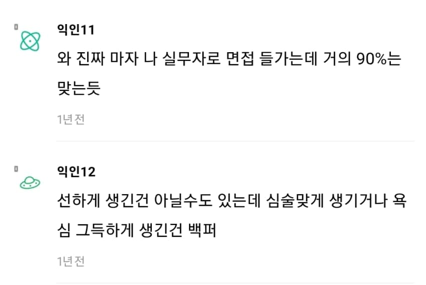
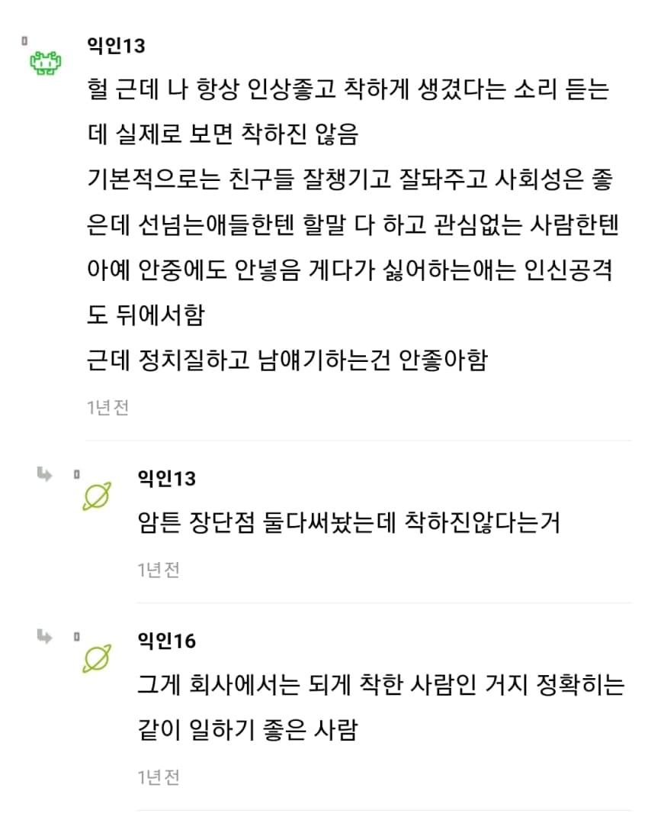
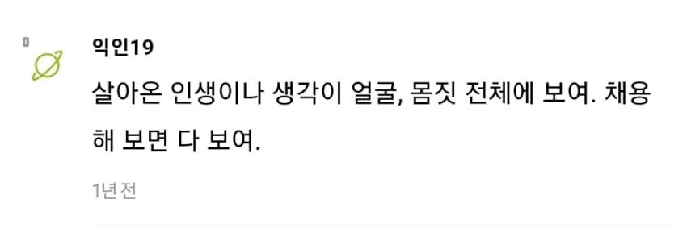
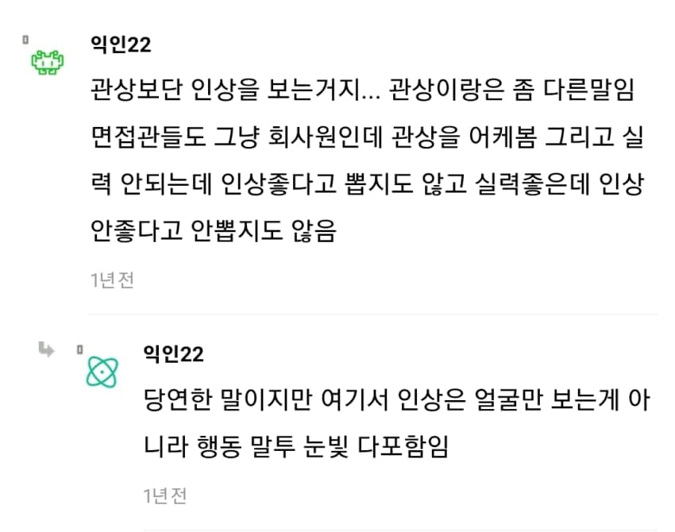













댓글
수집 당시 댓글 195개
ㅇㅇ · 11.14 10:43:04
ㅇㅇ · 11.14 10:43:52
ㅇㅇ · 11.14 10:44:37
ㅇㅇ · 11.14 10:48:07
원또 · 11.14 10:57:26
ㅇㅇ · 11.14 10:59:05
ㅇㅇ · 11.14 11:05:06
oo · 11.14 11:08:40
ㅇㅇ · 11.14 11:11:58
ㅇㅇ · 11.14 11:21:45
ㅇㅇ · 11.14 11:45:29
· ㅇㅇ · 11.14 14:05:19
ㅇㅇ · 11.14 11:45:45
· ㅇㅇ · 11.14 11:47:07
· ㅇㅇ · 11.14 11:48:35
ㅇㅇ · 11.14 11:50:47
ㅇㅇ · 11.14 11:50:53
00 · 11.14 11:52:59
ㅇㅇ · 11.14 11:54:06
ㄴㅁㅇㄹ · 11.14 11:55:07
2456778 · 11.14 11:56:12
ㅇㅇ · 11.14 11:56:26
ㅇㅇ · 11.14 11:59:32
ㅇㅇ · 11.14 12:07:08
· ㅇㅇ · 11.14 12:09:14
ㅇㅇ · 11.14 12:11:18
· ㅇㅇ · 11.14 12:16:26
ㅇㅇ · 11.14 12:18:42
ㅇㅇ · 11.14 12:20:06
ㅇㅇ · 11.14 12:20:06
ㅇㅇ · 11.14 12:23:51
ㅇㅇ · 11.14 12:25:44
· ㅇㅇ · 11.14 12:27:59
· ㅇㅇ · 11.14 12:32:14
· ㅇㅇ · 11.14 12:34:11
· 리코타 · 11.14 16:40:08
설명충이된다 · 11.14 12:32:43
ㅇㅇ · 11.14 12:36:24
· ㅇㅇ · 11.14 13:25:11
· ㅇㅇ · 11.14 18:14:38
VX · 11.14 12:44:58
· ㅇㅇ · 11.14 17:57:53
ㅇㅇ · 11.14 13:23:56
ㅇㅇ · 11.14 13:28:21
· ㅇㅇ · 11.14 13:29:20
ㅇㅇ · 11.14 13:33:17
ㅇㅇ · 11.14 13:36:53
ㅇㅇ · 11.14 13:49:23
ㅇㅇ · 11.14 14:00:31
ㅇㅇ · 11.14 14:05:47
ㅇㅇ · 11.14 14:11:45
· ㅇㅇ · 11.14 18:04:24
ㅇㅇ · 11.14 14:12:43
ㅅㅅ · 11.14 14:13:15
ㅇㅇ · 11.14 14:21:05
ㅇㅇ · 11.14 14:25:25
· ㅇㅇ · 11.14 14:29:37
ㅇㅇ · 11.14 14:28:05
ㅇㅇ · 11.14 14:38:26
ㅇㅇ · 11.14 14:44:35
ㅇㅇ · 11.14 14:50:20
· ㅇㅇ · 11.14 14:51:15
ㅇㅇ · 11.14 14:53:56
ㅇㅇ · 11.14 15:13:33
ㅇㅇ · 11.14 15:20:30
· ㅇㅇ · 11.14 15:23:00
ㅇㅇ · 11.14 15:20:43
· ㅇㅇ · 11.14 16:46:13
· ㅇㅇ · 11.14 16:46:23
ㅇㅇ · 11.14 15:42:53
ㅇㅇ · 11.14 15:54:03
· ㅇ · 11.14 17:01:18
· ㅇㅇ · 11.14 17:46:29
· ㅇㅇ · 11.14 18:35:58
ㅇㅇ · 11.14 15:59:30
38일_후_2026년12월21일_파산 · 11.14 16:16:03
ㅇㅇ · 11.14 16:34:13
ㅇㅇ · 11.14 16:46:23
ㅇㅇ · 11.14 16:56:51
ㅇㅇ · 11.14 16:58:58
ㅇㅇ · 11.14 17:02:37
ㅇㅇ · 11.14 17:06:41
ㅇㅇ · 11.14 17:15:45
ㅇㅇ · 11.14 17:33:23
ㅇㅇ · 11.14 17:33:28
ㅇㅇ · 11.14 17:33:33
ㅇㅇ · 11.14 17:33:37
ㅇㅇ · 11.14 17:33:40
ㅇㅇ · 11.14 17:33:44
ㅇㅇ · 11.14 17:36:12
ㅇㅇ · 11.14 17:45:48
ㅇㅇ · 11.14 17:46:18
ㅇㅇ · 11.14 17:51:55
ㅇㅇ · 11.14 17:51:58
ㅇㅇ · 11.14 18:04:16
링타로 · 11.14 18:06:17
린잘알 · 11.14 18:23:20
ㅇㅇ · 11.14 18:28:35
ㅇㅇ · 11.14 18:42:08
ㄹㄹ · 11.14 18:42:15
ㅇㅇ · 11.14 09:52:15
ㅇㅇ · 11.14 09:53:12
홀홀 · 11.14 09:53:13
ㅇㅇ · 11.14 09:54:46
· ㅇㅇ · 11.14 09:55:36
· ㅇㅇ · 11.14 10:34:35
· ㅇㅇ · 11.14 10:35:03
· ㅇㅇ · 11.14 10:56:20
· ㅇㅇ · 11.14 11:49:23
· ㅇㅇ · 11.14 11:56:15
· ㅇㅇ · 11.14 14:53:23
ㅇㅇ · 11.14 09:54:46
ㅇㅇ · 11.14 09:54:58
ㅇㅇ · 11.14 09:55:09
· ㅇㅇ · 11.14 10:13:08
ㅇㅇ · 11.14 09:55:34
· 애기연지벌레 · 11.14 11:53:38
ㅇㅇ · 11.14 09:55:54
· ㅇㅇ · 11.14 10:07:49
· 심치만 · 11.14 11:57:27
· ㅇㅇ · 11.14 12:04:02
· ㅇㅇ · 11.14 12:29:03
· ㅇㅇ · 11.14 12:48:06
ㅇㅇ · 11.14 09:56:27
ㅇㅇ · 11.14 09:56:34
· ㅇㅇ · 11.14 10:05:58
ㅇㅇ · 11.14 09:56:59
엔리카클로체 · 11.14 09:57:26
ㅇㅇ · 11.14 09:57:54
ㅇㅇ · 11.14 09:58:15
· ㅇㅇ · 11.14 10:02:36
· ㅇㅇ · 11.14 10:04:04
ㅇㅇ · 11.14 09:58:32
· ㅇㅇ · 11.14 10:02:56
· ㅇㅇ · 11.14 10:03:10
· ㅇㅇ · 11.14 10:06:13
· ㅇㅇ · 11.14 10:49:37
· ㅇㅇ · 11.14 11:16:37
· ㅇㅇ · 11.14 13:45:27
ㅇㅇ · 11.14 09:59:05
· ㅇㅇ · 11.14 10:00:08
· ㅇㅇ · 11.14 10:04:53
· ㅇㅇ · 11.14 14:11:55
ㅇㅇ · 11.14 09:59:32
ㅇㅇ · 11.14 10:00:14
ㅇㅇ · 11.14 10:00:26
· ㅇㅇ · 11.14 10:06:18
ㅇㅇ · 11.14 10:00:42
ㅇㅇ · 11.14 10:01:07
ㅇㅇ · 11.14 10:01:10
ㅇㅇ · 11.14 10:02:16
ㅇㅇ · 11.14 10:02:20
ㅇㅇ · 11.14 10:02:51
ㅇㅇ · 11.14 10:03:31
ㅇㅇ · 11.14 10:03:44
ㅇㅇ · 11.14 10:05:57
ㅇㅇ · 11.14 10:07:32
ㅇㅇ · 11.14 10:07:34
ㅇㅇ · 11.14 10:08:47
· ㅇㅇ · 11.14 10:22:11
· 고소 · 11.14 11:24:51
· ㅇㅇ · 11.14 15:52:49
ㅇㅇ · 11.14 10:09:11
192.168.* · 11.14 10:11:01
ㅇㅇ · 11.14 10:11:05
ㅇㅇ · 11.14 10:12:13
· ㅇㅇ · 11.14 10:13:04
ㅇㅇ · 11.14 10:15:37
ㅇㅇ · 11.14 10:18:11
ㅇㅇ · 11.14 10:18:53
ㅇㅇ · 11.14 10:18:55
· ㅇㅇ · 11.14 11:52:50
ㅇㅇ · 11.14 10:19:40
ㅇㅇ · 11.14 10:19:50
ㅇㅇ · 11.14 10:19:50
· ㅇㅇ · 11.14 10:20:00
ㅇㅇ · 11.14 10:22:56
· ㅇㅇ · 11.14 10:31:29
ㅇㅇ · 11.14 10:23:19
· 푸른반복 · 11.14 17:13:12
ㅇㅇ · 11.14 10:23:24
ㅇㅇ · 11.14 10:23:24
ㅇㅇ · 11.14 10:26:06
· ㅇㅇ · 11.14 10:27:30
ㅇㅇ · 11.14 10:27:39
· ㅇㅇ · 11.14 10:27:44
· ㅇㅇ · 11.14 12:09:08
· ㅇㅇ · 11.14 16:41:43
행복은바보같이 · 11.14 10:29:41
ㅇㅇ · 11.14 10:29:45
ㅇㅇ · 11.14 10:36:28
· ㅇㅇ · 11.14 17:53:45
ㅇㅇ · 11.14 10:37:17
· ㅇㅇ · 11.14 10:42:11
ㅇㅇ · 11.14 10:42:12